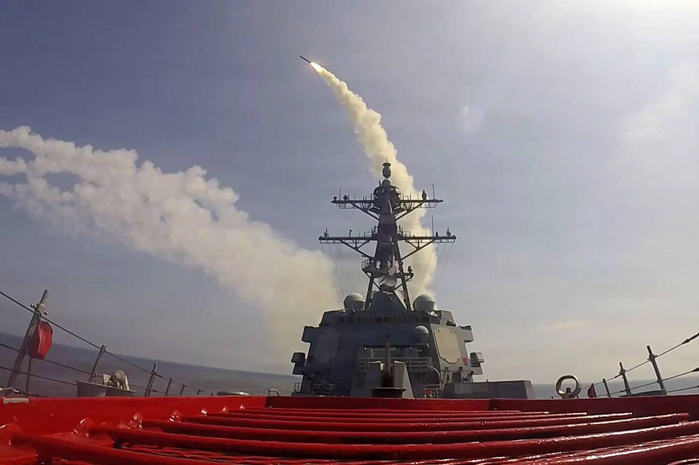

The U.S. Is Learning the Wrong Lessons in Iran

alt="The USS Frank E. Petersen Jr. fires a missile while at sea">Although the conflict in Iran and the Strait of Hormuz is far from over, analysts are already rushing to declare what lessons should be learned from it. An emerging genre of security policy articles highlights the various logistical and tactical shortcomings of the U.S. operation against Iran: a lack of preparation for disruptions in oil and fertilizer shipping, insufficient magazine depth in precision munitions and interceptors, a general failure to prepare effectively to counter cheap one-way attack drones, insufficient minesweepers, and so on.
These are useful lessons that may help the United States prepare for future conflicts, but they are not the fundamental cause of the country’s failure in the Strait of Hormuz. Even if some or all of these concerns had been addressed long before the conflict, it is hard to see how they might alter the Trump administration’s failure to achieve its initial war aims of regime change, the destruction of Iran’s long-range strike capability, or major alterations in Iranian policy toward nuclear weapons and regional proxies.
While greater magazine depth and preparedness for oil shortages might have enabled a longer bombing campaign or a greater degree of economic pressure, that is no reason to suppose that seven months of bombing or blockade might achieve what nearly six months thus far have not. Strategic failure, leaving Iran with a freer hand to pursue nuclear ambitions, a far greater degree of control over the Strait of Hormuz, and consequently a greater degree of influence over the Gulf states now seems the most likely outcome of this military debacle.
The U.S. military remains remarkably capable, demonstrating even in this poorly conceived war technical capabilities that no other military can currently match, projecting military force more than 7,000 miles from American shores, and seizing control of Iran’s skies with the apparent casual ease the world has become accustomed to in America’s wars.
The resulting damage has been remarkably lopsided, with the United States suffering at least 18 dead and more than 600 wounded against Iranian losses that almost certainly number well into the thousands, though a precise total is not known. In short, even with failures of planning and logistics, the U.S. military has shown that it remains remarkably dangerous.
U.S. President Donald Trump has demanded of the military not one impossible task, but three, and then reacted with shocked anger when it has failed.
The first of these impossible tasks was the administration’s stated aim of achieving regime change without any ground operations. Achieving a strategic victory entirely through airpower has been the coveted aim of independent air forces around the world ever since Italian theorist Giulio Douhet predicted in 1921 that future wars could be won with bombers alone.
The thesis that wars can be won entirely from the air is now one of the most thoroughly tested in all of modern industrial war. The bombing campaigns of World War II, Vietnam and later conflicts demonstrated the enormous destructive power of air forces, but also the difficulty of translating that destruction into political collapse.
The chances of the Iranian regime collapsing entirely through the application of airpower were slim to none, so the next impossible thing demanded of the U.S. military was to neutralize Iran’s ballistic missile and drone capacity, also entirely from the air.
In WWII, both American and British air forces made substantial efforts to shut down V-1 flying bomb and V-2 rocket production and launches through an extensive bombing campaign, codenamed Operation Crossbow, but they could not stop the launches. It was simply too easy to harden or conceal production and launch sites.
The advent of precision munitions has not changed this calculus, being offset by the emergence of mobile launch systems. Efforts to take out mobile missile launchers from the air have repeatedly demonstrated the difficulty of finding and destroying systems that can fire from concealment and rapidly relocate.
Multiple coalitions of countries have attempted to silence Houthi missiles and drones fired from Yemen, yet the launches continue. Even with precision munitions, it does not seem possible, from the air alone, to destroy enough mobile launch systems to end a drone or rocket campaign.
The Trump administration’s final fallback appears to be simply running nearly perfect missile defense over much of the Persian Gulf region to prevent Iran from damaging the infrastructure of the Gulf Cooperation Council countries.
Greater investment into cost-effective interception methods and the deployment of more short-range air defense might well have enabled the U.S. military to intercept a greater percentage of Iranian attacks. Yet in an environment where drones and ballistic missiles remain much cheaper and quicker to produce than the means to intercept them, it was always likely that Iran would eventually saturate defense capacity in the region.
One more impossible task could not rescue the failure of two others.
If the U.S. military required a wake-up call to the dangers and opportunities posed by drones, as well as long-standing procurement problems for things like frigates, minesweepers, and hardened aircraft facilities, that call has been delivered.
But this was not a war lost in the halls of the U.S. Defense Department; it was lost in the halls of the White House.
If Trump was unable to see the peril in demanding the U.S. military accomplish the impossible, it was the duty of his defense secretary to make him aware.
Hegseth, in turn, has gone to great lengths to purge the senior ranks of anyone likely to offer a contrary opinion. The U.S. officer corps has never excelled at delivering unwelcome news to political decision-makers, but this approach meant the Pentagon was never going to push back against presidential ineptitude.
All of this was predictable and indeed much of it was predicted. Thus, while the immediate blame for the debacle in Iran attaches to Trump and his advisors, the ultimate blame must lie where no politician will admit it: with the voters.
It turns out that electing the leader of the most powerful military on the planet is not the same as selecting the most entertaining host of a reality show.
Reports about lessons learned are doubtless already being penned within the Pentagon. Yet as the strategic fallout, from elevated oil prices to depleted U.S. resources, of this predictable and disgraceful failure continue to mount, the question is whether American voters have realized that no amount of military excellence is sufficient to insulate them from their own poor choices at the ballot box.